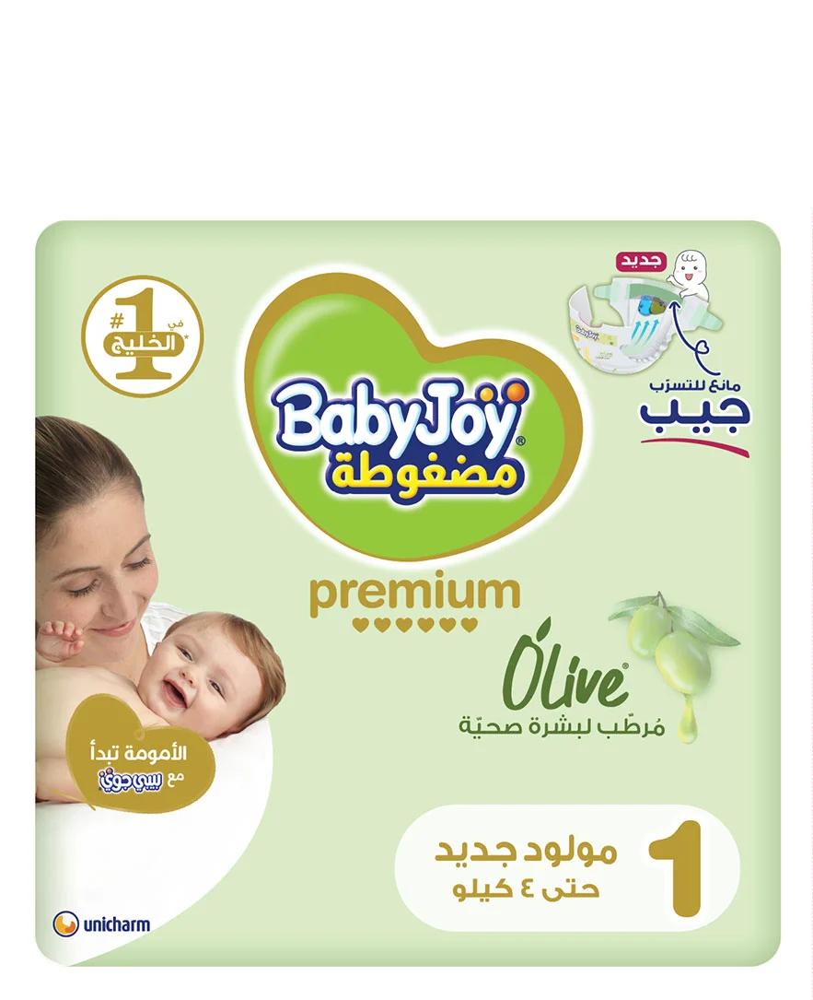
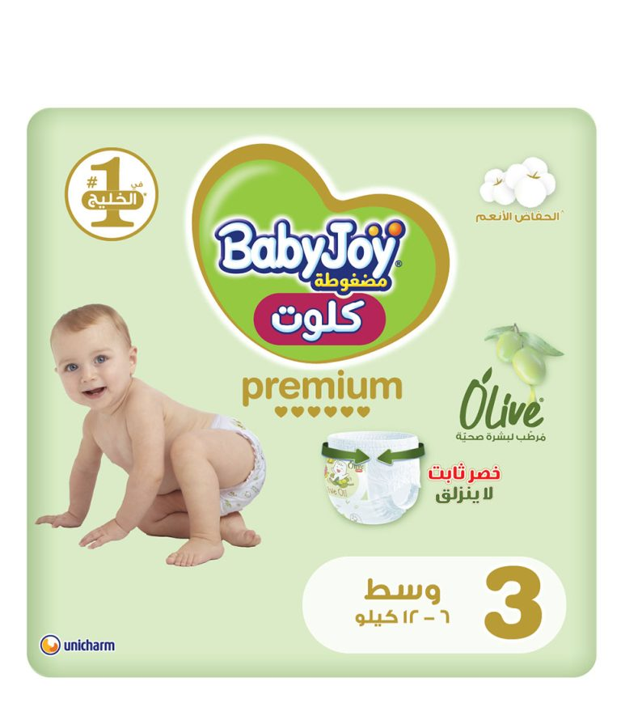
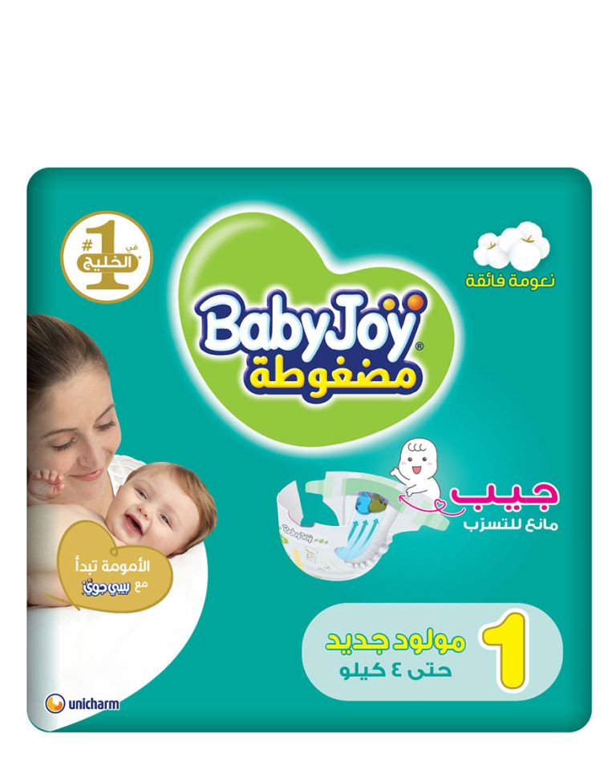
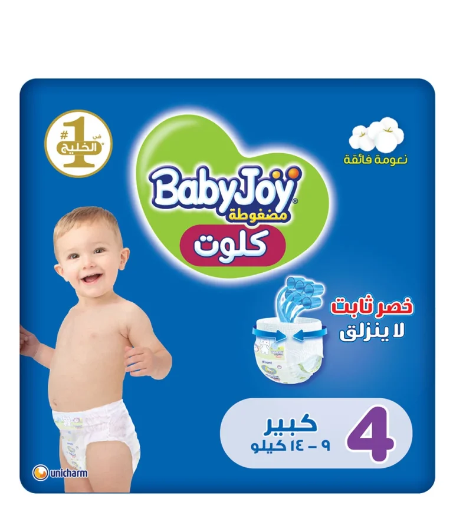
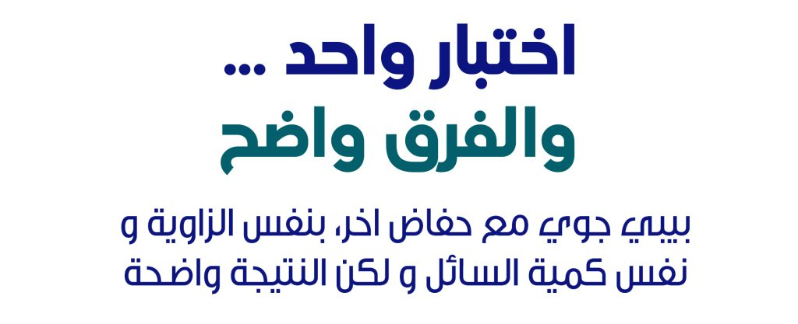

بريميومبريميوم زيتون – لاصق
لعناية فائقة بالبشرة الحساسة
- ملمس ناعم مع لمسة زيت الزيتون*
- لاصق مرن قابل للتعديل
- مؤشر رطوبة*
المقاسات:
اختاري مقاساً لعرض المواصفات
حماية من التسرب، حتى مع حركة طفلك.
شاهد الفرق بين بيبي جوي وحفاض آخر، بنفس الزاوية وكمية السائل.
اعثري على المقاس المناسب شاهدي المنتجات
[نص افتراضي] يُثبَّت كل حفاض على سطح مائل بزاوية ٤٥°، ويُسكب نفس حجم السائل بنفس المعدل، ثم يُقارن التسرب بصرياً بعد مدة محددة. يجب إرفاق المنهجية الموثقة ونتائج الاختبار المعتمدة قبل الإطلاق.
اختاري العائلة ثم المقاس. المواصفات أدناه تجريبية.

بريميوملعناية فائقة بالبشرة الحساسة

بريميومسهولة اللبس للطفل النشيط

يوميقيمة ممتازة للاستخدام اليومي

يوميللأطفال الذين يحبون الحركة
لطيفة على البشرة لكل تغيير حفاض. (قسم مقترح — تفاصيل المنتجات تُضاف من الكتالوج الرسمي)
| بريميوم زيتون لاصق | بريميوم زيتون سروال | مضغوط لاصق | سروال عادي | |
|---|---|---|---|---|
| الأنسب لـ | حديثو الولادة والبشرة الحساسة | الطفل النشيط | الاستخدام اليومي | التدريب والحركة |
| نطاق المقاسات* | NB–XL | M–XXL | 1–5 | 3–6 |
| طريقة اللبس | لاصق | سروال | لاصق | سروال |
| الفئة | بريميوم | بريميوم | قيمة | قيمة |
* بيانات افتراضية. ملاحظة: يوجد تعارض في نطاق وزن السروال العادي مقاس ٤ بين مصادر مختلفة — تم إخفاؤه حتى التحقق.
يوضع الحفاضان جنباً إلى جنب على سطح مائل ٤٥°.
نفس كمية السائل وبنفس المعدل.
مدة زمنية موحدة للحفاضين.
مقارنة التسرب بوضوح أمام الكاميرا.
اللاصق مثالي لحديثي الولادة وتغيير الحفاض والطفل مستلقٍ. السروال أسهل للطفل الذي يزحف أو يمشي.
علامات حمراء على الفخذين، صعوبة إغلاق اللاصق، أو تكرار التسرب — قد تكون إشارة للانتقال للمقاس التالي.
تأكدي من فرد الحواف الجانبية للخارج، وشد اللاصق بشكل متماثل، وتغيير الحفاض بانتظام.
من المتاجر الإلكترونية والصيدليات والهايبرماركت الكبرى في المملكة.
مجموعة بريميوم زيتون مصممة للعناية بالبشرة. [الادعاء يحتاج إلى توثيق]
اختاري المقاس الأكبر إذا اقترب الوزن من الحد الأعلى.
بيبي جوي علامة تجارية للعناية بالطفل تقدمها مجموعة UGHI بالشراكة مع يونيتشارم، وتهدف إلى منح الأمهات في المملكة حماية موثوقة وراحة يومية لأطفالهن. [نص مختصر — يُستبدل بالقصة المعتمدة]
